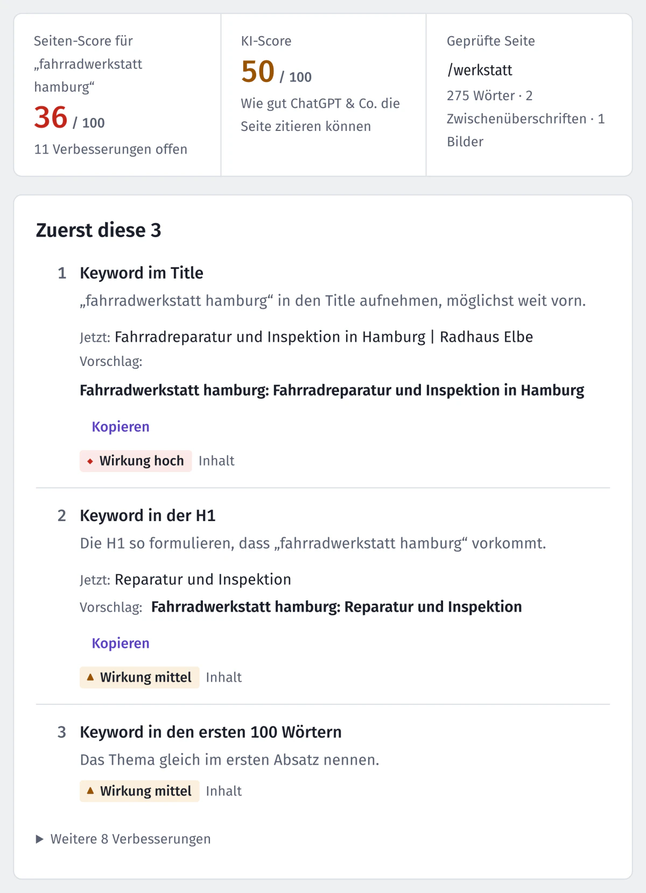

Blog · Ratgeber ·
Seitentitel für Handwerksbetriebe: So findet man dich
Der Seitentitel entscheidet mit, bei welchen Suchen du erscheinst. Eine einfache Formel, Beispiele für jede Seite und die häufigsten Fehler.
Der Seitentitel (Fachwort: Title-Tag, in Yoast „SEO-Titel“) ist die blaue Zeile in deinem Eintrag bei Google und der Text im Browser-Tab. Für Google ist er einer der wichtigsten Hinweise, worum es auf einer Seite geht. Google darf ihn im Suchergebnis aber auch umschreiben, etwa mit der Hauptüberschrift der Seite. Trotzdem steht auf vielen Handwerkerseiten nur „Startseite“, „Home“ oder der Firmenname.
Die Formel: Leistung, Ort, Name
Schreib vorn hin, wonach deine Kunden suchen, und hinten, wer du bist:
Malerarbeiten in Bremen | Malerbetrieb Mustermann- Leistung zuerst: So, wie Kunden suchen. Eher „Maler“ oder „Badsanierung“ als „Ihr Partner für Oberflächengestaltung“.
- Ort dazu: Wer einen Handwerker sucht, sucht fast immer in der Nähe.
- Name zum Schluss: Wer dich schon kennt, findet dich auch so.
- Faustregel 50 bis 60 Zeichen: Eine feste Grenze gibt es nicht, Google kürzt nach der Breite des Bildschirms. Was vorn steht, ist sicher sichtbar. Nextfix meldet ab 70 Zeichen.
Jede Seite bekommt ihren eigenen Titel
Hat jede Seite denselben Titel, kann Google sie nicht unterscheiden. Zum Beispiel so:
- Startseite:
Maler in Bremen-Findorff | Malerbetrieb Mustermann - Leistungsseite:
Fassade streichen in Bremen | Malerbetrieb Mustermann - Leistungsseite:
Tapezieren in Bremen | Malerbetrieb Mustermann - Über uns:
Über uns: Malermeister seit 1994 | Malerbetrieb Mustermann - Kontakt:
Kontakt und Angebot anfragen | Malerbetrieb Mustermann
Für Kontakt und Impressum musst du dir keine große Mühe machen. Bei den Seiten, die Aufträge bringen sollen, lohnt sich jedes Wort.
Häufige Fehler
- „Startseite“ oder „Home“: Sagt Google nichts.
- Orte aufzählen: „Maler Bremen Oldenburg Delmenhorst Achim Verden“ wirkt auf Google wie Tricksen und auf Menschen wie Spam. Besser eine Seite „Einsatzgebiet“, die die Orte nennt. Eigene Seiten je Ort nur, wenn es dort wirklich etwas Eigenes gibt, etwa eine Filiale oder Referenzen. Fast gleiche Ortsseiten mit ausgetauschtem Ortsnamen zählt Google zu den Brückenseiten, also zum Spam.
- Alles in Großbuchstaben oder mit Sternchen: Fällt auf, aber nicht positiv.
Wo du den Titel änderst
- WordPress mit Yoast: Seite bearbeiten, Kasten „Yoast SEO“, Feld „SEO-Titel“.
- WordPress mit Rank Math: Rank-Math-Symbol oben rechts, „Snippet bearbeiten“, Feld „Titel“.
- Wix: Seitenmenü, drei Punkte an der Seite, „SEO-Grundlagen“, Feld „Titel-Tag“.
- Jimdo: In den SEO-Einstellungen der jeweiligen Seite.
Für die kurze Beschreibung unter dem Titel gibt es einen eigenen Ratgeber: Meta-Beschreibung schreiben.
Ausprobieren, ohne etwas zu ändern: Auf unserer Startseite gibt es einen Titel-Check. Du tippst Titel und Suchbegriff ein und siehst, ob die Länge passt, ob der Begriff drinsteht und wie der Eintrag bei Google ungefähr aussieht.
Nextfix findet das für dich
Nextfix prüft den Titel jeder Seite: ob er fehlt, doppelt vorkommt oder zu lang ist. In „Seite optimieren“ gibst du einen Suchbegriff ein und bekommst einen Titelvorschlag mit dem Begriff vorn, zum Kopieren.

Quellen
- Google Search Central: Titel im Suchergebnis
- Google Search Central: Spam-Richtlinien, Brückenseiten